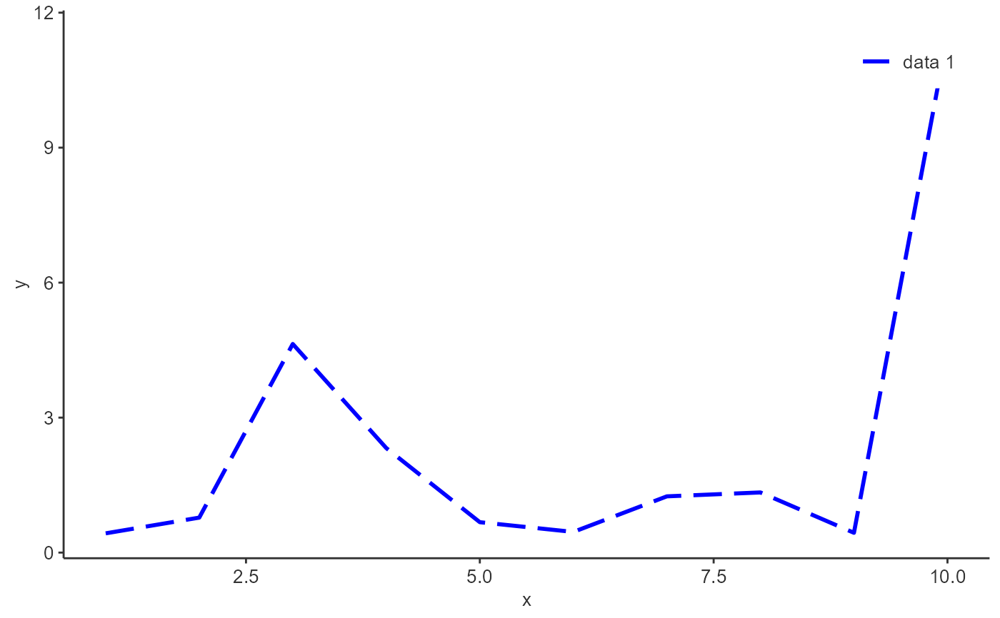

Enum of ggplot2 linetypes
See also
Other enum helpers:
AestheticFields,
AestheticProperties,
AestheticSelectionKeys,
Alignments,
AtomPlots,
ColorMaps,
ColorPalettes,
DataMappings,
DefaultDataMappingValues,
Directions,
ExportFormats,
ExportUnits,
FontFaces,
HorizontalJustification,
LegendPositions,
LegendTypes,
MoleculePlots,
PlotAnnotationTextSize,
PlotConfigurations,
Scaling,
Shapes,
TagPositions,
TickLabelTransforms,
VerticalJustification,
tlfStatFunctions
Examples
# Use ggplot2 to plot and label Linetypes
linesData <- data.frame(
x = 0,
y = seq_along(Linetypes),
linetype = factor(names(Linetypes), levels = names(Linetypes))
)
ggplot2::ggplot(data = linesData) +
ggplot2::theme_void() +
ggplot2::geom_hline(ggplot2::aes(yintercept = y, linetype = linetype)) +
# Add linetype names from enum below the displayed linetype
ggplot2::geom_text(ggplot2::aes(x = x, y = y, label = linetype), nudge_y = -0.2, size = 4) +
# Use scale to display the actual linetype
ggplot2::scale_linetype_manual(values = as.character(unlist(Linetypes))) +
# Remove the legend as the linetype name is labelled below the linetype
ggplot2::guides(linetype = "none")
# Perform a line plot with blue long dashes as linetype
addLine(
x = 1:10,
y = rlnorm(10),
linetype = Linetypes$longdash,
color = "blue",
size = 1
)
